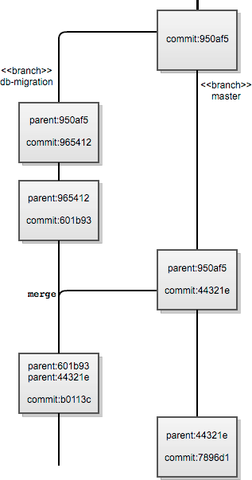

2019 03 21 Git架构
翻译自The Architecture of Open Source Applications (Volume 2): Git
简述
Git允许许多协作者使用对等的存储库网络维护数字化工作体（通常但不限于代码），支持分布式工作流，允许工作体最终的交汇或暂时的分歧。本章将展示Git的各个方面如何实现，以及与其他版本控制系统（VCS）的区别。
来源
为了更好地理解Git的设计理念，有助于理解在Linux内核社区中启动Git项目的环境。
相较于当时的其他商业软件项目，Linux内核是不寻常的，因为提交者数量众多，贡献者参与度和现有代码库知识的差异很大。多年来，内核一直通过tarball和补丁进行维护，核心开发社区努力寻找满足其大部分需求的VCS。
Git是一个开源项目，源于2005年的需求和挫折。当时的Linux内行人代码库由两个VCS（BitKeeper和CVS）由不同的核心开发者管理。BitKeeper提供了与当前流行的开源VCS提供的VCS历史谱系不同的视图。
BitKeeper的制造商BitMover宣布将取消一些核心Linux内核开发人员的许可后几天，Linus Torvalds开始急于开发Git。他首先编写了一系列脚本来帮助他管理电子邮件补丁，以便一个接一个地应用。这个初始脚本集合的目的是能够快速中止合并，以便维护者可以修改code-mid-patch-stream中的代码库以手动合并，然后继续合并后续补丁。
从一开始，Torvalds对Git有一个哲学目标——成为反CVS加三个可用性设计目标：
- 支持分布式工作流，类似于BitKeeper启用的工作流。
- 提供防范内容损坏的保护措施。
- 提供高性能。
这些设计目标已在一定程度上完成和维护，正如我将试图通过剖析Git使用有向无环图（DAG）进行内容存储，头部参考指针，对象模型表示和远程协议来展示;最后Git如何跟踪树的合并。
尽管BitKeeper影响了Git的原始设计，但它以完全不同的方式实现，并允许更多的分布式加上仅限本地的工作流，这是BitKeeper无法实现的。 Monotone是一个开源的分布式VCS，始于2003年，可能是Git早期开发过程中的另一个灵感来源。
分布式版本控制系统提供了极大的工作流程灵活性，通常以简单性为代价分布式模型的特定优势包括：
- 为协作者提供脱机工作和递增提交的能力。
- 允许协作者确定他/她的工作何时可以分享。
- 在离线时提供协作者对存储库历史记录的访问权限。
- 允许将托管作业发布到多个存储库，可能会显示不同的分支或更改粒度。
在Git项目启动的时候，启动了另外三个开源分布式VCS项目。 （其中之一，Mercurial，在开源应用程序架构的第1卷中进行了讨论。）所有这些dVCS工具都提供了稍微不同的方法来实现高度灵活的工作流程，这些工作流程集中了VCS，直到它们无法直接处理。注意：Subversion有一个名为SVK的扩展，由不同的开发人员维护，以支持服务器到服务器的同步。
今天流行且积极维护的开源dVCS项目包括Bazaar，Darcs，Fossil，Git，Mercurial和Veracity。
版本控制系统设计
现在是退一步看看Git的替代VCS解决方案的好时机。了解他们的差异将使我们能够探索在开发Git时面临的架构选择。
版本控制系统通常有三个核心功能要求，即：
- 内容存储
- 跟踪内容更改（包括合并元数据的历史记录）
- 与协作者分发内容和历史记录
注意：上述第三个要求不是所有VCS的功能要求。
内容存储
用于在VCS世界中存储内容的最常见设计选择是基于增量的变更集，或者具有有向无环图（DAG）内容表示。
基于Delta的变更集封装了扁平内容的两个版本之间的差异，以及一些元数据。将内容表示为有向非循环图包含形成层次结构的对象，该层次结构将内容的文件系统树镜像为提交的快照（尽可能重用树内未更改的对象）。 Git使用不同类型的对象将内容存储为有向非循环图。本章后面的“对象数据库”部分描述了可以在Git存储库中形成DAG的不同类型的对象。
提交和合并历史
在历史和变更跟踪方面，大多数VCS软件使用以下方法之一：
- 线性历史
- 有向历史的有向无环图
Git再次使用DAG来存储其历史记录。每个提交都包含有关其祖先的元数据; Git中的提交可以有零个或多个（理论上无限制）父提交。例如，Git存储库中的第一个提交将具有零父项，而三向合并的结果将具有三个父项。 Git和Subversion及其线性历史祖先之间的另一个主要区别是它能够直接支持将记录大多数合并历史案例的分支。
Git使用有向非循环图来存储内容，从而实现完全分支功能。文件的历史记录从其目录结构（通过表示目录的节点）一直链接到根目录，然后根目录链接到提交节点。反过来，该提交节点可以具有一个或多个父节点。这为Git提供了两个属性，使我们能够以比从RCS派生的VCS系列更明确的方式推断历史和内容，即：
- 当图中的内容（即文件或目录）节点与不同提交中的内容（即Git中的SHA）具有相同的引用标识时，两个节点保证包含相同的内容，允许Git短路内容有效地分化。
- 合并两个分支时，我们正在合并DAG中两个节点的内容。 DAG允许Git“有效”（与VCS的RCS系列相比）确定共同的祖先。
分配
VCS解决方案通过以下三种方式之一处理项目协作者的工作副本内容分发：
-
仅限本地：适用于没有上述第三功能要求的VCS解决方案。
-
中央服务器：对存储库的所有更改必须通过一个特定的存储库进行交易，以便将其记录在历史记录中。
- 分布式模型：通常会有可公开访问的存储库供协作者“推送”，但是可以在本地进行提交并稍后推送到这些公共节点，从而允许脱机工作。
为了演示每个主要设计选择的好处和局限性，我们将考虑Subversion存储库和Git存储库（在服务器上），具有相同的内容（即，Git存储库中默认分支的HEAD具有与Subversion存储库在trunk上的最新版本）。名为Alex的开发人员拥有Subversion存储库的本地签出和Git存储库的本地克隆。
让我们说Alex在本地Subversion结帐中更改1 MB文件，然后提交更改。在本地，文件的结帐模拟最新的更改并更新本地元数据。在Alex在集中式Subversion存储库中提交期间，在文件的先前快照和新更改之间生成差异，并且此差异存储在存储库中。
与Git的工作方式形成对比。当Alex对本地Git克隆中的等效文件进行相同的修改时，更改将首先在本地记录，然后Alex可以将本地挂起的提交“推送”到公共存储库，以便可以与项目上的其他协作者共享工作。对于提交所存在的每个Git存储库，内容更改的存储方式相同。在本地提交（最简单的情况）时，本地Git存储库将创建一个新对象，表示已更改文件的文件（其中包含所有内容）。对于更改文件上方的每个目录（以及存储库根目录），将使用新标识符创建新树对象。从新创建的指向blob的根树对象开始创建DAG（重用现有blob引用，其中文件内容在此提交中未更改）并引用新创建的blob代替先前树层次结构中该文件的先前blob对象。 （blob表示存储在存储库中的文件。）
此时，提交仍然是Alex本地设备上当前Git克隆的本地提交。当Alex将提交“推送”到可公开访问的Git存储库时，此提交将被发送到该存储库。在公共存储库验证提交可以应用于分支之后，相同的对象存储在公共存储库中，与最初在本地Git存储库中创建的一样。
Git场景中有许多移动部件，无论是在幕后还是用户，都要求他们明确表达与远程存储库共享更改的意图，而不是将更改作为本地提交进行跟踪。但是，这两个增加的复杂程度为团队提供了更大的工作流程和发布功能灵活性，如上面“Git的起源”部分所述。
在Subversion场景中，协作者在准备好让其他人查看所做的更改时，不必记得推送到公共远程存储库。当对较大文件的小修改发送到中央Subversion存储库时，存储的增量比存储每个版本的完整文件内容更有效。但是，正如我们稍后将看到的，有一种解决方法，Git在某些情况下可以利用它。
工具包
今天，Git生态系统在许多操作系统（包括最初几乎不支持的Windows）上包含许多命令行和UI工具。大多数这些工具大多建立在Git核心工具包之上。
由于Git最初是由Linus编写的，并且它在Linux社区中的开发，因此它在Unix命令行工具的传统中使用工具包设计理念。
Git工具包分为两部分：plumbing（译者注：不知怎么翻译😂）和porcelain。plumbing由低级命令组成，这些命令支持基本内容跟踪和有向无环图（DAG）的操作。porcelain是git命令的较小子集，大多数Git最终用户可能需要使用它来维护存储库并在存储库之间进行通信以进行协作。
虽然工具包设计提供了足够的命令来为许多脚本编写者提供细粒度的功能访问，但应用程序开发人员抱怨缺少Git的可链接库。由于Git二进制文件调用die()，它不是可重入的，GUI，Web接口或更长时间运行的服务必须fork/exec对Git二进制文件的调用，这可能很慢。
正在努力改善应用程序开发人员的情况;有关详细信息，请参阅“当前和未来工作”部分。
存储库、索引和工作区域
如果只是为了理解一些基本概念，让我们亲自动手并深入使用Git本地化。 首先在我们的本地文件系统上创建一个新的初始化Git存储库（使用Unix系的操作系统），我们可以这样做：
$ mkdir testgit
$ cd testgit
$ git init
现在我们在testgit目录中有一个空的但已初始化的Git存储库。我们可以分支，提交，标记甚至与其他本地和远程Git存储库进行通信。即使只使用少量git命令，也可以与其他类型的VCS存储库进行通信。
git init命令在testgit中创建一个.git子目录。我们来看看吧：
$ tree .git/
.git/
|-- HEAD
|-- config
|-- description
|-- hooks
| |-- applypatch-msg.sample
| |-- commit-msg.sample
| |-- post-commit.sample
| |-- post-receive.sample
| |-- post-update.sample
| |-- pre-applypatch.sample
| |-- pre-commit.sample
| |-- pre-rebase.sample
| |-- prepare-commit-msg.sample
| |-- update.sample
|-- info
| |-- exclude
|-- objects
| |-- info
| |-- pack
|-- refs
|-- heads
|-- tags
默认情况下，上面的.git目录是根工作目录testgit的子目录。它包含一些不同类型的文件和目录：
- 配置：
.git/config，.git/description和.git/info/exclude文件本质上有助于配置本地存储库。 - 钩子：
.git/hooks目录包含可以在存储库的某些生命周期事件上运行的脚本。 - 暂存区域：
.git/index文件（上面的树列表中尚不存在）将为我们的工作目录提供暂存区域。 - 对象数据库：
.git/objects目录是默认的Git对象数据库，它包含本地内容的所有内容或指针。一旦创建，所有对象都是不可变的。 - 参考：
.git/refs目录是存储本地和远程分支。标签和头部的引用指针的默认位置。引用是指向对象的指针，通常是类型tag或commit。引用在对象数据库之外进行管理，以允许引用在存储库发展时更改它们指向的位置。引用的特殊情况可能指向其他参考，例如HEAD。
.git目录是实际的存储库。包含工作文件集的目录是工作目录，通常是.git目录（或存储库）的父目录。如果您正在创建一个没有工作目录的Git远程存储库，则可以使用git init --bare命令对其进行初始化。这将在根目录下创建精简的存储库文件，而不是将存储库创建为工作树下的子目录。
另一个非常重要的文件是Git索引.git/index。它提供本地工作目录和本地存储库之间的暂存区域。索引用于在一个文件（或更多）中暂存特定更改，以便一起提交。即使您进行了与各种类型的功能相关的更改，也可以使用相同的更改进行提交，以便在提交消息中更加逻辑地描述它们。要有选择地暂存文件或文件集中的特定更改，可以使用git add -p。
默认情况下，Git索引存储为存储库目录中的单个文件。可以使用环境变量自定义这三个区域的路径。 理解在执行几个核心Git命令期间在这三个区域（存储库，索引和工作区域）之间发生的交互是有帮助的：
-
git checkout [branch]，这会将本地存储库的HEAD引用移动到分支引用路径（例如refs/heads/master），使用此头数据填充索引并刷新工作目录以表示该头部的树。 -
git add [files]，这将交叉引用使用Git索引中相应条目指定的文件的校验和，以查看分阶段文件的索引是否需要使用工作目录的版本进行更新。 Git目录（或存储库）中没有任何变化。
让我们通过检查.git目录（或存储库）下的文件内容来更具体地探讨这意味着什么。
$ GIT_DIR=$PWD/.git
$ cat $GIT_DIR/HEAD
ref: refs/heads/master
$ MY_CURRENT_BRANCH=$(cat .git/HEAD | sed 's/ref: //g')
$ cat $GIT_DIR/$MY_CURRENT_BRANCH
cat: .git/refs/heads/master: No such file or directory
我们得到一个错误，因为在对Git存储库进行任何提交之前，除了Git中的默认分支（无论是否存在）之外，不存在任何分支。
现在，如果我们进行新的提交，则默认情况下会为此提交创建主分支。让我们这样做（继续在同一个shell中，保留历史和上下文）：
$ git commit -m "Initial empty commit" --allow-empty
$ git branch
* master
$ cat $GIT_DIR/$MY_CURRENT_BRANCH
3bce5b130b17b7ce2f98d17b2998e32b1bc29d68
$ git cat-file -p $(cat $GIT_DIR/$MY_CURRENT_BRANCH)
我们在这里开始看到的是Git对象数据库中的内容表示。
对象数据库

Git有四个基本的原始对象，本地存储库中的每种类型的内容都是围绕它构建的。每种对象类型都具有以下属性：类型，大小和内容。原始对象类型是：
- 树：表示内容目录时，树中的元素可以是另一个树或blob。
- Blob：blob表示存储在存储库中的文件。
- 提交：提交指向表示该提交的顶级目录的树以及父提交和标准属性。
- 标记：标记具有名称，并指向标记所代表的存储库历史记录中的提交。
所有对象基元都由SHA引用，这是一个40位的对象标识，具有以下属性：
- 如果两个对象相同，则它们将具有相同的SHA。
- 如果两个对象不同，它们将具有不同的SHA。
- 如果仅部分复制对象或发生其他形式的数据损坏，则重新计算当前对象的SHA将识别此类损坏。
SHA的前两个属性与对象的身份相关，在启用Git的分布式模型（Git的第二个目标）时最有用。后一种属性可以实现一些防止腐败的保护措施（Git的第三个目标）。
尽管使用基于DAG的存储用于内容存储和合并历史的理想结果，但对于许多存储库而言，增量存储将比使用松散DAG对象更节省空间。
存储和压缩技术
Git通过以压缩格式打包对象来解决存储空间问题，使用指向偏移量的索引文件来定位相应打包文件中的特定对象。
我们可以使用git count-objects计算本地Git存储库中的松散（或解包）对象的数量。现在我们可以让Git在对象数据库中打包松散对象，删除已经打包的松散对象，并根据需要使用Git管道命令查找冗余包文件。
Git中的包文件格式已经发展，初始格式在索引文件本身中存储包文件和索引文件的CRC校验和。但是，这意味着压缩数据中可能存在无法检测到的损坏，因为重新包装阶段不涉及任何进一步的检查。包文件格式的版本2通过在包索引文件中包括每个压缩对象的CRC校验和来克服该问题。版本2还允许大于4 GB的packfiles，初始格式不支持。作为快速检测包文件损坏的一种方法，包文件的末尾包含该文件中所有SHA的有序列表的20字节SHA1和。新的包文件格式的重点是帮助实现Git的第二个可用性设计目标，即防止数据损坏。
对于远程通信，Git计算需要通过线路发送的提交和内容以同步存储库（或仅仅是分支），并动态生成包文件格式以使用客户端的所需协议发回。
合并历史
如前所述，Git在合并历史方法上与RCS VCS系列在本质上有所不同。例如，Subversion以线性级数表示文件或树历史;任何具有更高版本号的内容都将取代之前的任何内容。不直接支持分支，只能通过存储库中的未强制目录结构。

让我们首先使用一个示例来说明在维护工作的多个分支时这可能会有什么问题。然后我们将看一个场景来展示它的局限性。
在典型的根branches/branch-name中处理Subversion中的“分支”时，我们正在处理与trunk相邻的目录子树（通常是实时或主等效代码所在的目录子树）。让我们说这个分支代表trunk树的并行开发。
例如，我们可能正在重写代码库以使用不同的数据库。通过我们的重写的一部分，我们希望合并来自另一个分支子树（不是trunk）的上游更改。如有必要，我们会手动合并这些更改，然后继续进行重写。当天晚些时候，我们在branches/branch-name分支上完成数据库供应商迁移代码更改，并将我们的更改合并到trunk中。像Subversion这样的线性历史VCS处理这个问题的方法是，无法知道来自另一个分支的变更集现在包含在trunk中。
基于DAG的合并历史VCS，如Git，可以很好地处理这种情况。假设其他分支不包含尚未合并到我们的数据库供应商迁移分支中的提交（例如，我们的Git存储库中的db-migration），我们可以从提交对象父关系确定db-migration上的提交branch包含另一个上游分支的tip（或HEAD）。请注意，提交对象可以具有零或更多（仅限于合并的能力）父项。因此，db-migration分支上的合并提交知道它通过父节点的SHA哈希值合并到当前分支的当前HEAD和另一个上游分支的HEAD中。在master中的合并提交（Git中的trunk等价物）也是如此。
使用基于DAG（和基于线性）的合并历史很难明确回答的问题是每个分支中包含哪些提交。例如，在上面的场景中，我们假设我们将来自两个分支的所有更改合并到每个分支中。情况可能并非如此。 对于更简单的情况，Git能够从其他分支中提取提交到当前分支，假设提交可以干净地应用于分支。
下一步？
如前所述，我们今天所知的Git核心基于Unix世界的工具包设计理念，这对于脚本非常方便，但对于嵌入内部或与更长时间运行的应用程序或服务链接不太有用。虽然目前在许多流行的集成开发环境中都有Git支持，但添加此支持并维护它比集成对VCS的支持更具挑战性，VCS为多个平台提供易于链接和共享的库。
为了解决这个问题，Shawn Pearce（谷歌的开源项目办公室）带头努力创建一个可链接的Git库，其中包含更多许可，不会禁止使用该库。这被称为libgit2。直到一位名叫Vincent Marti的学生去年为他的Google Summer of Code项目选择它之后，它才有了太大的吸引力。从那时起，Vincent和Github工程师继续为libgit2项目做出贡献，并为许多其他流行语言（如Ruby，Python，PHP，.NET语言，Lua和Objective-C）创建了绑定。
Shawn Pearce还创建了一个名为JGit的BSD许可纯Java库，它支持Git存储库上的许多常见操作。它现在由Eclipse Foundation维护，用于Eclipse IDE Git集成。
Git核心项目之外的其他有趣和实验性的开源工作是使用替代数据存储作为Git对象数据库的后端的许多实现，例如：
- jgit_cassandra，它使用Apache Cassandra提供Git对象持久性，Apache Cassandra是一个混合数据存储区，使用Dynamo风格的分布和BigTable列族数据模型语义。
- jgit_hbase，它允许对存储在HBase（分布式键值数据存储区）中的Git对象进行读写操作。
- libgit2-backends，这是从libgit2努力为多个流行的数据存储创建Git对象数据库后端而产生的，例如Memcached，Redis，SQLite和MySQL。
所有这些开源项目都独立于Git核心项目进行维护。
如您所见，今天有很多种方法可以使用Git格式。
Git的面貌不再仅仅是Git Core项目的工具包命令行界面;而是存储库格式和协议在存储库之间共享。
在撰写本文时，根据他们的开发人员的说法，大多数这些项目还没有达到稳定版本，因此该领域的工作仍然需要完成，但Git的未来似乎很光明。
得到的教训
在软件中，每个设计决策最终都是一种权衡。作为Git的版本控制的强大用户，以及围绕Git对象数据库模型开发软件的人，我对Git目前的形式非常喜爱。因此，这些经验教训更多地反映了由于设计决策和Git核心开发人员关注焦点而引起的关于Git的常见反复抱怨。
评估Git的开发人员和经理最常见的抱怨之一就是缺乏与其他VCS工具相同的IDE集成。 Git的工具包设计使其比将其他现代VCS工具集成到IDE和相关工具中更具挑战性。
在Git的早期历史中，一些命令是作为shell脚本实现的。这些shell脚本命令实现使Git不那么便携，尤其是对Windows。我确信Git核心开发人员并没有因此而失眠，但由于Git开发初期普遍存在的可移植性问题，它对大型组织中Git的采用产生了负面影响。今天，一个名为Git for Windows的项目已由志愿者启动，以确保新版本的Git及时移植到Windows。
使用大量管道命令围绕工具包设计设计Git的间接后果是新用户很快就会丢失;从混淆所有可用的子命令到无法理解错误消息，因为低级别的管道任务失败，新用户有很多地方误入歧途。这使得一些开发团队更难以采用Git。
即使有关于Git的这些抱怨，我对Git Core项目的未来发展的可能性以及从它启动的所有相关开源项目感到兴奋。